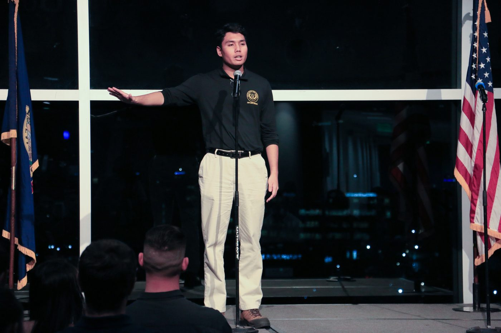

Gregor Ethan Rubin Posadas
M.S. · E.I. · ENV SP
Estudyante ng PhD sa Environmental Engineering sa UC Berkeley, kasapi ng Nelson Research Group (magbubukas sa bagong tab), na may Designated Emphasis sa Development Engineering.
Tungkol sa akin
Ako ay nasa unang taon ng aking PhD sa Environmental Engineering sa University of California, Berkeley, sa ilalim ni Prof. Kara Nelson at ni Prof. Maya Carrasquillo. Nagmula ako sa Boise State University, kung saan natapos ko ang aking bachelor's at master's sa Civil Engineering at pinag-aralan ko ang pagganap ng mga retrofit na teknolohiya sa oksihenasyon ng wastewater treatment at ang kilos ng mga emerging contaminant sa iba't ibang yugto ng paglilinis ng wastewater.
Ipinanganak ako sa Ang pinakamataong lungsod sa Metro Manila at kabisera ng bansa mula 1948 hanggang 1976. Narito ang UP Diliman. Alamin pa (magbubukas sa bagong tab) at doon lumaki sa halos buong buhay ko, maliban sa maiikling panahon sa Isang bayan sa lalawigan ng Rizal, sa silangang gilid ng Metro Manila. Alamin pa (magbubukas sa bagong tab) at Isang lungsod sa kabundukan ng Rizal, sa silangan lamang ng Metro Manila. Alamin pa (magbubukas sa bagong tab), bago lumipat sa Idaho noong 2019. Pisiko at guro ang aking ama, at naniwala siyang dapat maglingkod sa tao ang agham. Iyon pa rin ang dahilan kung bakit ko ginagawa ang gawaing ito. Malawak ang aking interes sa pamamahala ng tubig: kung paano nakikita sa mismong imprastraktura at sa serbisyong natatanggap ng mga sambahayan ang paraan ng pag-oorganisa at pamamahala sa mga sistema ng tubig. Umaasa akong makabalik sa Pilipinas balang-araw upang mag-ambag sa pagpapaunlad ng imprastraktura ng tubig at sa reporma ng sektor.
Mula 2025 hanggang 2026, naging research fellow ako sa Water Finance Exchange (WFX) (magbubukas sa bagong tab), isang non-profit na organisasyong nagbibigay ng technical assistance, kung saan pinag-aralan ko ang mga hadlang sa pagtanggap ng bagong teknolohiya ng maliliit at rural na sistema ng tubig sa Estados Unidos. Bilang Engineer-in-Training, nagkonsulta ako sa wastewater treatment at pagsusuri ng datos, at anim na taon akong naglingkod bilang combat engineer sa U.S. Army Reserve.
Bukod sa pananaliksik, tumutulong ako sa pagbuo ng BahaWatch (magbubukas sa bagong tab), isang proyektong pang-komunidad para sa pagsubaybay ng baha sa Pilipinas na pinamumunuan ni Noam Anglo. Mahilig din akong magluto, kumuha ng litrato, tumugtog ng piyano, at maglaro ng Civilization VI nang matagal.

Ngayon
UC Berkeley
Civil & Environmental Engineering
Estudyante ng PhD mula Fall 2026 · Chancellor's Fellow
- GrupoNelson Research Group (magbubukas sa bagong tab)
- Mga tagapayoKara Nelson at Maya Carrasquillo
- EmphasisDevelopment Engineering (Designated Emphasis)
- ProyektoBahaWatch (magbubukas sa bagong tab), dashboard ng baha
Ang linya hanggang ngayon
- PilipinasDito ipinanganak at lumaki. Kalaunan, lead graphic designer ng Dice & D-Pads sa Quezon City, 2020 hanggang 2023.
- Boise, Idaho · 2019Lumipat sa Idaho at sumapi sa U.S. Army Reserve bilang combat engineer. B.S. Civil Engineering, 2023, cum laude.
- Boise State · 2023 hanggang 2025Graduate research assistant sa oksihenasyon ng wastewater at mga emerging contaminant. M.S. Civil Engineering, 2025, 4.0 GPA.
- Water Finance Exchange · 2025 hanggang 2026Research fellow sa pagtanggap ng teknolohiya at regionalization ng maliliit at rural na sistema ng tubig sa U.S.
- Berkeley, California · 2026PhD, Environmental Engineering. Pamamahala at imprastraktura ng tubig, nakatuon sa Pilipinas.
Pagsusulat, pagsasalita, at outreach
Paminsan-minsan akong nagsusulat sa Medium (magbubukas sa bagong tab) tungkol sa tubig, imprastraktura, at Pilipinas. Noong Mayo 2025, ako ang featured scientist ng Pinoy Scientists (magbubukas sa bagong tab) at sumulat ako ng araw-araw na serye tungkol sa imprastraktura ng Pilipinas at sa papel ng mga inhinyerong Pilipino sa pag-unlad ng bansa. Ilan sa mga card mula sa linggong iyon:


Bubukas nang buong laki ang bawat card. Nakasaad sa mismong card ang mga kumuha ng larawan. Nasa Ingles ang mga card.
Sa entablado
Noong Nobyembre 2023, nagkuwento ako sa Veterans in STEM show ng The Story Collider (magbubukas sa bagong tab) sa Boise State, tungkol sa pagsapi ko sa Army Reserve upang mapag-aral ang sarili sa inhinyeriya at sa pag-uwi ng pangarap ng aking ama.

Sa Medium
Nasa Ingles ang mga artikulo.
- Mar 2025
- Peb 2025
- Peb 2025
Sa labas ng trabaho
Malayo sa lab, nagluluto ako, kumukuha ng litrato, at paminsan-minsan ay inaayos ang kotse ko. Pinabilis din at walang tunog.
Sa ilalim ng hood. Pagpapalit ng preno.